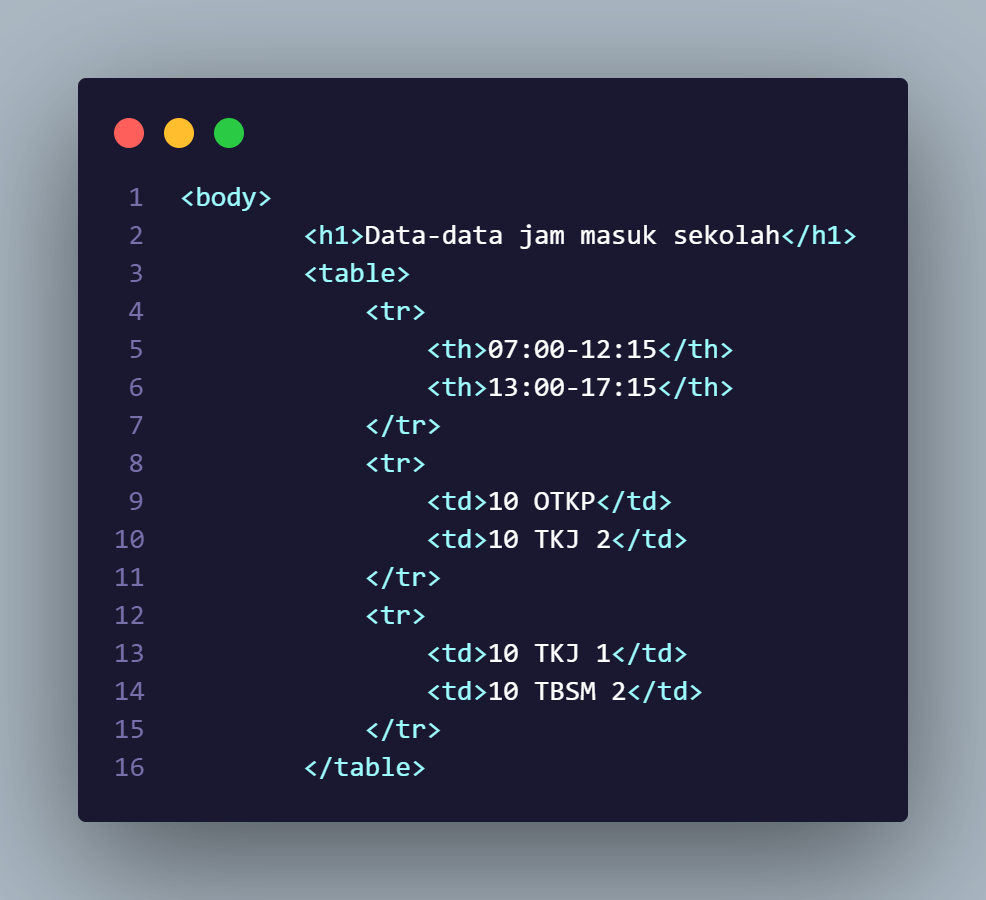

HTML (Hypertext Markup Language) adalah bahasa pemrograman yang digunakan untuk membuat dan merancang halaman web. Namun, secara teknis, HTML bukanlah bahasa pemrograman dalam arti tradisional, melainkan lebih merupakan bahasa markah yang digunakan untuk struktur dan format konten pada halaman web. HTML bekerja dengan cara menyusun elemen-elemen seperti teks, gambar, dan tautan dalam dokumen yang dapat diakses melalui internet.
Sejarah HTML dimulai pada awal 1990-an. Pada tahun 1989, seorang ilmuwan komputer bernama Tim Berners-Lee di CERN (Organisasi Eropa untuk Riset Nuklir) di Jenewa, Swiss, mulai mengembangkan apa yang kemudian dikenal sebagai World Wide Web (WWW). Pada tahun 1990, Berners-Lee membuat proposal untuk sistem hypertext yang memungkinkan dokumen-dokumen untuk saling terhubung melalui tautan. Pada tahun 1991, Berners-Lee menciptakan HTML sebagai bagian dari upaya untuk membuat dokumen hypertext yang bisa diakses melalui internet. Versi pertama HTML, HTML 1.0, dirilis pada tahun 1993. Kemudian, HTML terus berkembang dengan penambahan fitur-fitur baru dalam versi-versi selanjutnya, seperti HTML 2.0, HTML 3.2, HTML 4.01, XHTML (HTML yang diperbaharui), dan versi terbaru, HTML5. HTML5, yang diperkenalkan pada tahun 2014, membawa banyak perubahan dan peningkatan signifikan dalam hal fungsionalitas dan kemampuan, termasuk dukungan untuk multimedia, grafis, dan aplikasi web yang lebih kaya. HTML5 juga menyediakan fitur-fitur baru yang memungkinkan pengembangan web yang lebih dinamis dan interaktif. Seiring dengan perkembangan HTML, banyak teknologi web lainnya juga berkembang, seperti CSS (Cascading Style Sheets) untuk mengatur tampilan dan layout halaman web, serta JavaScript untuk menambahkan interaktivitas dan fungsionalitas dinamis. Kombinasi dari ketiga teknologi ini (HTML, CSS, dan JavaScript) membentuk dasar dari pengembangan web modern.
sebelum itu kita harus menyiapkan beberapa alat sebagai berikut:
Komputer/Laptop
Aplikasi Visual Studio Code
Pastikan storage anda cukup
Selanjutnya kita klik kanan pada mouse, klik "new" lalu klik "new folder" lalu isi nama pada folder.
Setelah itu, buka software Visual Code Studia lalu kita tarik folder barunya ke Visual Studio Code, dan Kita buat file baru lagi dengan nama "namafile" ditambah tanda titik(.) dan ketik "html" setelah tanda titik jadi seperti di gambar ini.
Adapun dasar-dasar html yang bisa kalian pahami seperti tag html, tag html pada intinya adalah sebuah simbol yang bisa menciptakan elemen-elemen dan simbolnya adalah seperti ini <...> Ini adalah tag html pembuka dan ada juga tag html penutup yang bentuknya seperti ini < /... >, Mungkin kalian bingung apa bedanya elemen dan tag? nah bedanya elemen itu seperti nama-nama komponennya seperti head, body, title, h1, dll dan kalau kita gabungkan dengan tagnya bentuknya akan seperti ini
"< !DOCTYPE html >"
, nah !DOCTYPE html adalah sebuah elemen dasar untuk menciptakan pondasi pada website.
Oke berikutnya!, ini adalah contoh elemen-elemen pada html yang paling dasar.
Selanjutnya!, ini adalah jenis-jenis header pada html, mungkin kalian bertanya "mengapa header pada html hanya dibatasi sampai 6 saja?" karena pada umumnya, penerapan h1 hingga h6 sudah cukup untuk menangkap tingkat kepentingan yang berbeda dari konten pada halaman web. Jika Anda menemukan kebutuhan untuk lebih banyak tingkat header, mungkin perlu dipertimbangkan kembali desain atau struktur konten halaman web tersebut agar tetap terorganisir dengan baik dan mudah dimengerti oleh pengguna.
Setelah itu ada juga yang namanya list pada html, nah kalian juga bingung kan? "apa bedanya ul dan ol", bedanya ul dan ol adalah kalo ul menciptakan tanda titik disamping teks yang kita ketik sedangkan ol merupakan list yang menciptakan nomor pada samping teks dan kita juga menggunakan < li > untuk mengisi teks pada list seperti digambar ini.
Oke kemudian ini ada juga yang namanya table yaitu elemen yang menciptakan pondasi pada tabel, menggunakan tr juga untuk menciptakan barisan pertama pada website, dan ada juga th dan td, nah mungkin dari kalian ada yang bingung nih perbedaannya, oke bedanya th dan td adalah mereka sih sama menciptakan data pada tabel tapi kalo th itu dia ada tambahannya yaitu teksnya menjadi tebal atau bold sedangkan td itu masih biasa-biasa aja, kalian juga bisa dilihat dari gambar dibawah ini.
Selanjutnya ada yang namanya line break dan horizontal rule yaitu memiliki fungsi yang sama tapi ada sedikit perbedaan, kalo break line adalah elemen yang mengatur teks untuk menciptakan barisan baru dibawahnya, sedangkan horizontal rule adalah sebuah elemen yang memisahkan teks ke bawah namun memunculkan garis horizontal juga di bawahnya, dan kita juga memakai elemen
< p > untuk membuat paragraf pada html, kita bisa lihat dari gambar di bawah ini.